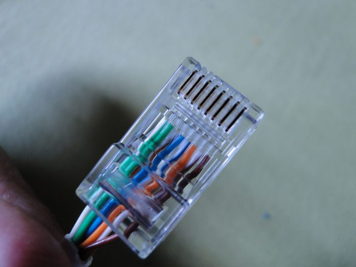
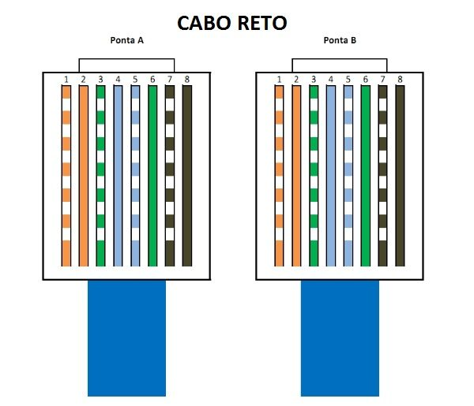

Nossa empresa também aborda as diferentes regiões das redes.
Como Elementos Essenciais para uma Rede com Servidor Web no Packet Tracer sendo eles:
• Servidor Web: Representa o computador que hospeda os arquivos de um site (HTML, CSS, JavaScript) e os disponibiliza para acesso pela internet.
• Roteador: Conecta diferentes redes e encaminha pacotes de dados entre elas. Ele é essencial para conectar o servidor web à internet simulada no Packet Tracer.
• Switch: Conecta múltiplos dispositivos em uma rede local (LAN). É utilizado para conectar o servidor web a outros dispositivos, como computadores clientes.
• Computadores: Representam os usuários que acessam o servidor web.
• Cabos: Conectam fisicamente os dispositivos da rede.
Na imagem acima do Packet Tracer, temos a ilustração de uma LAN onde podemos observar três tipos de serviços: DHCP, DNS e HTTP.
O que são servidores? Servidores são computadores ou sistemas computacionais que atendem requisições de dispositivos clientes, através de uma ou mais redes (locais ou remotas), capazes de executar aplicações (programas), prover processamento e/ou capacidade de armazenamento de dados.
O DHCP, ou Dynamic Host Configuration Protocol (Protocolo de Configuração de Host Dinâmico), é realmente um verdadeiro herói no mundo das redes. Imagine você como o administrador responsável por uma rede com 100 computadores, onde cada dispositivo precisa ser configurado manualmente. Agora, isso não envolve apenas a atribuição de endereços IP, mas também a definição de gateways e servidores DNS. Só de pensar nessa tarefa colossal, é impossível não agradecer diariamente pela existência do DHCP.
O DNS, que significa Sistema de Nomes de Domínio, é tipo um guia telefônico da internet. Você sabe como é difícil lembrar todos esses números IP, como 216.58.214.46? Bem, o DNS está aqui para resolver esse problema. Ele traduz os nomes amigáveis para humanos, como “www.google.com", em números que os computadores entendem.
Agora, deixe-me te falar sobre a linguagem que a web fala: o HTTP, ou Protocolo de Transferência de Hipertexto. Ele é como um garçom entre o seu navegador e os servidores web, garantindo que você receba os pratos (ou seja, as páginas da web) que você solicitou.
Quando você digita um endereço no seu navegador e pressiona “Enter”, é como pedir comida em um restaurante. O HTTP entra em ação, indo até o servidor, entregando o seu pedido e trazendo a comida — ou nesse caso, a página da web — de volta para você.
Mas o HTTP é mais que um simples garçom. Ele permite que as páginas da web tragam mais do que apenas texto. Imagens, vídeos, botões interativos — tudo isso é possível graças ao HTTP. Ele é a linguagem que permite que você clique, role e explore a vastidão da internet.
foto de uma crimpagem
foto de uma pinagem
O modelo de interconexão de sistemas abertos (OSI) é um modelo conceitual criado pela Organização Internacional de Normalização que permite que diversos sistemas de comunicação se comuniquem usando protocolos padronizados.
TCP/IP é um conjunto de protocolos que possibilita a comunicação entre computadores e servidores, formando a Internet. Ele combina o Protocolo de Controle de Transmissão (TCP), responsável pela transmissão de dados, com o Protocolo de Internet (IP), que identificar os computadores e servidores.